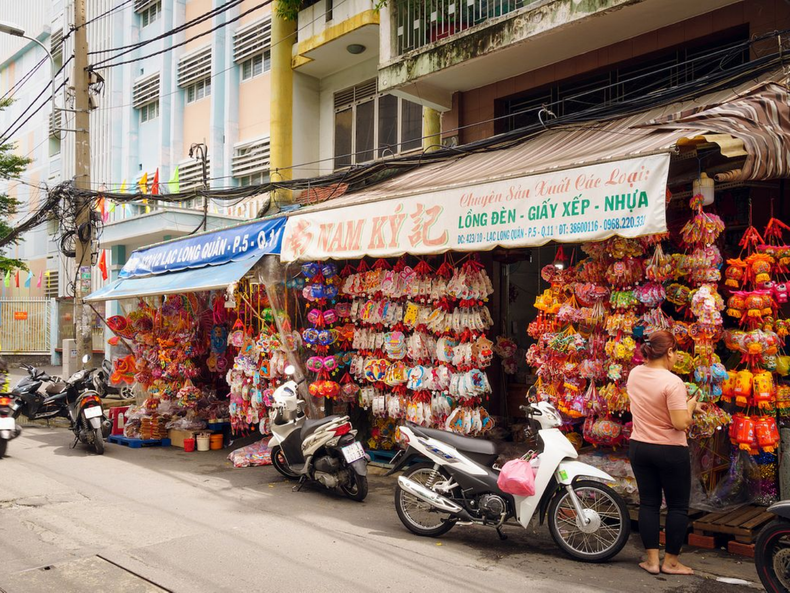
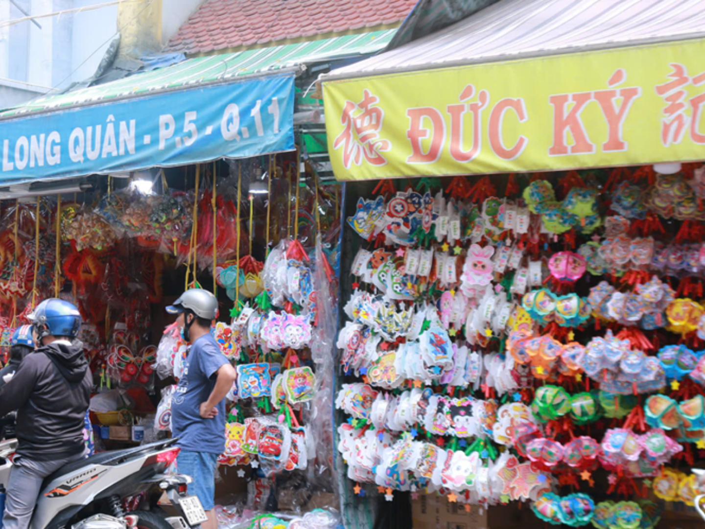
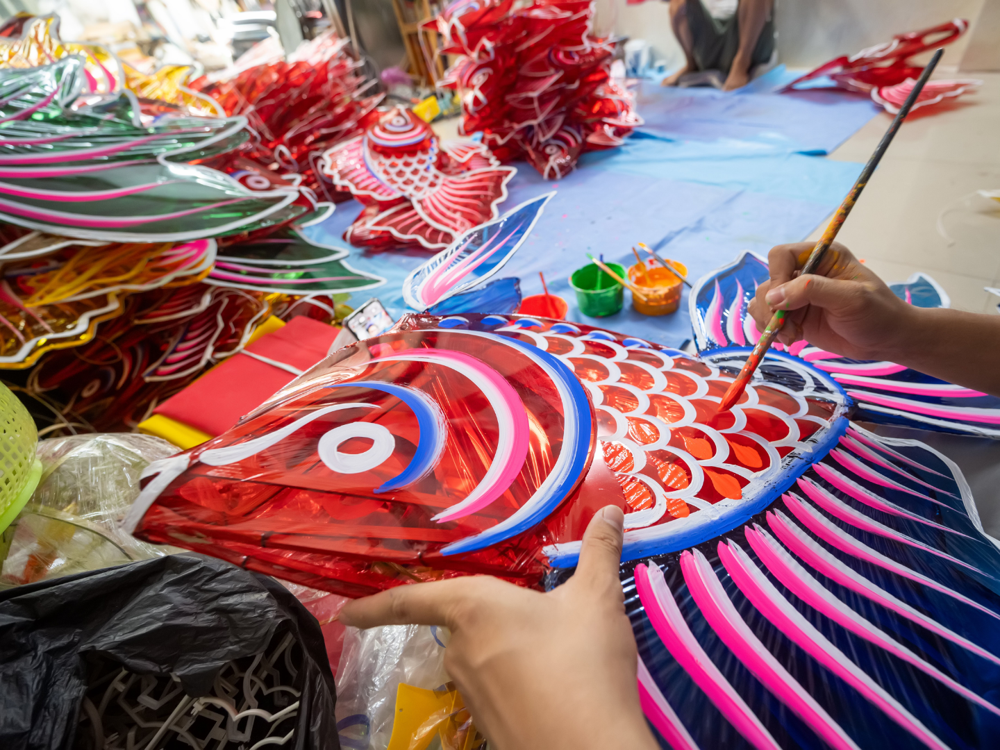
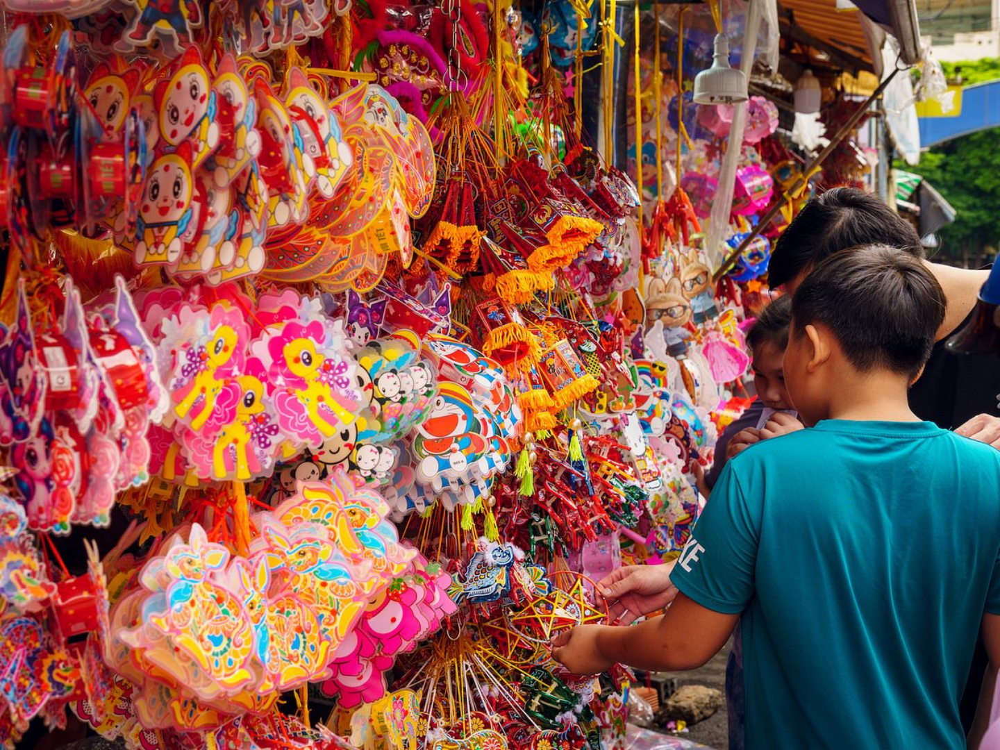
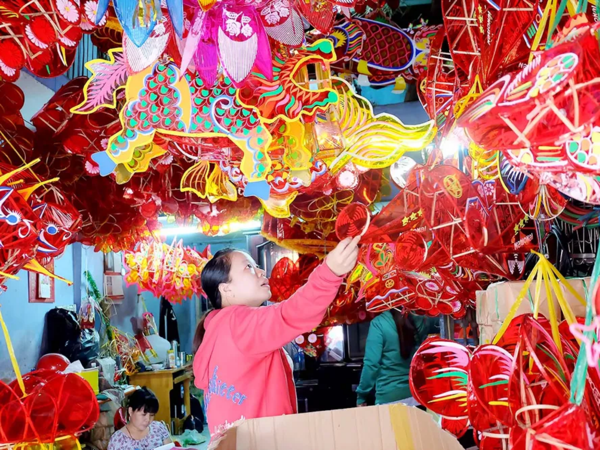
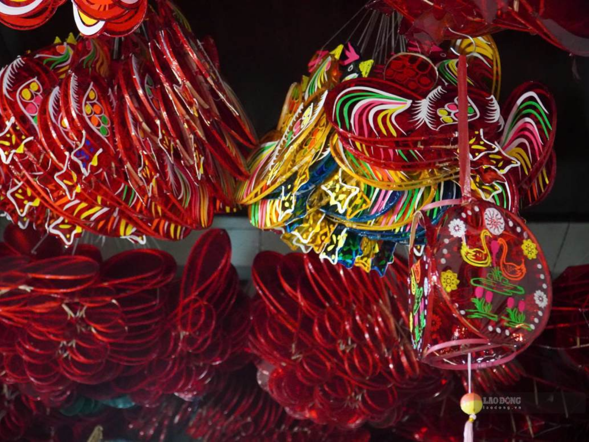

DI SẢN THỦ CÔNG VIỆT NAM
Làng lồng đèn
Phú Bình
Giữa lòng Sài Gòn, Phú Bình là nơi những chiếc lồng đèn Trung thu vẫn được làm bằng tre, giấy kiếng và đôi tay người thợ. Mời bạn ghé thăm, xem tận mắt và nghe kể về một nghề đã gắn bó với người dân nơi đây hơn bảy mươi năm.
Khám phá làng nghềLỜI CHÀO TỪ LÀNG NGHỀ
Một miền ký ức
được thắp sáng.
Làng Phú Bình hình thành từ giữa thập niên 1950, khi những gia đình từ Nam Định vào Sài Gòn lập nghiệp và mang theo nghề làm lồng đèn. Từ đó, năm nào đến mùa Trung thu, trong những căn nhà nhỏ dọc con hẻm lại sáng đèn, thức khuya để kịp những đơn hàng cho đêm rằm. Làng không lớn, người giữ nghề cũng không còn đông như trước, nhưng cửa nhà vẫn mở. Mời bạn chậm lại, xem người thợ làm đèn và mang về một chiếc đèn còn nguyên dấu tay người làm.
Đọc câu chuyện làng nghềKHÁM PHÁ
Từ câu chuyện
đến ánh đèn.
Các góc nhìn để bạn bước gần hơn vào thế giới lồng đèn Phú Bình.

TÌM ĐƯỜNG GHÉ THĂM
Khám phá
Phú Bình.
Xem vị trí và mở chỉ đường đến làng nghề trên Google Maps.
Hẻm 423 Lạc Long Quân, phường Hòa Bình, TP.HCM
Mở cửa từ sáng sớm cho đến chiều tối
Những tuần trước Tết Trung thu (rằm tháng Tám âm lịch)
Đây là nơi kinh doanh, sản xuất và nơi ở của các nghệ nhân và người dân. Khi tham quan, bạn hãy tôn trọng không gian chung, giữ trật tự, đi lại nhẹ nhàng. Cảm ơn bạn đã cùng gìn giữ sự thân thiện và nét bình dị của xóm nghề!
SẮC MÀU PHÚ BÌNH
Hình ảnh
làng nghề.






